Fiches CM1
2875 fiches d'exercices CM1 en français : lecture, texte à trous et compréhension orale, à imprimer (PDF) avec corrigé.
2.875 ressources
Thème
Électronique – Fiche : texte à trous, compréhension orale et mots mêlés
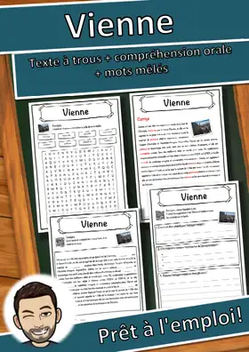
Vienne – Fiche : texte à trous, compréhension orale et mots mêlés
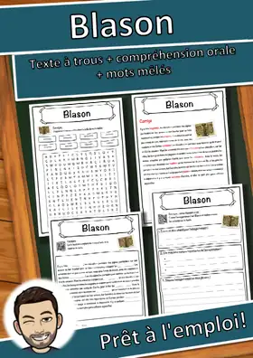
Blason – Fiche : texte à trous, compréhension orale et mots mêlés
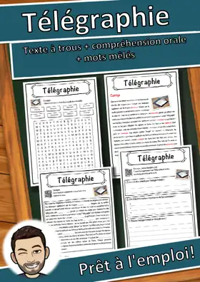
Télégraphie – Fiche : texte à trous, compréhension orale et mots mêlés
Tantale – Fiche : texte à trous, compréhension orale et mots mêlés
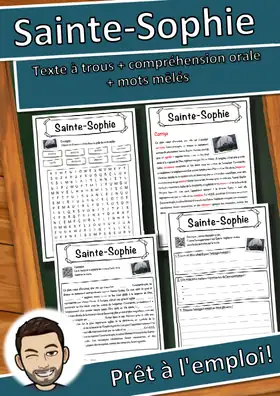
Sainte-Sophie – Fiche : texte à trous, compréhension orale et mots mêlés
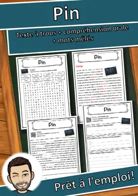
Pin – Fiche : texte à trous, compréhension orale et mots mêlés
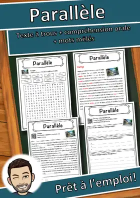
Parallèle – Fiche : texte à trous, compréhension orale et mots mêlés
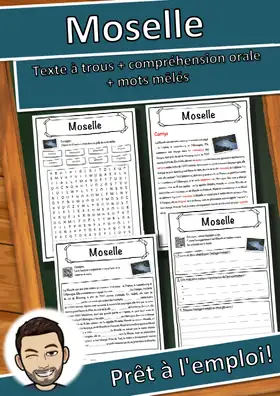
Moselle – Fiche : texte à trous, compréhension orale et mots mêlés
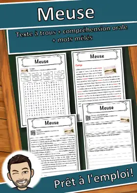
Meuse – Fiche : texte à trous, compréhension orale et mots mêlés
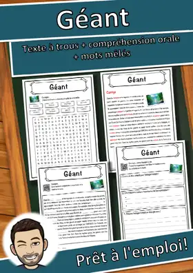
Géant – Fiche : texte à trous, compréhension orale et mots mêlés
Fruit – Fiche : texte à trous, compréhension orale et mots mêlés
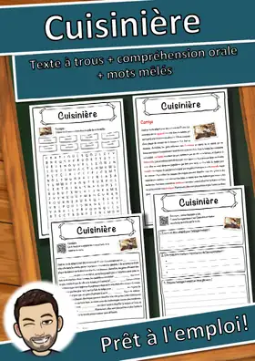
Cuisinière – Fiche : texte à trous, compréhension orale et mots mêlés
Col blanc – Fiche : texte à trous, compréhension orale et mots mêlés
Baie – Fiche : texte à trous, compréhension orale et mots mêlés

Río Grande – Fiche : texte à trous, compréhension orale et mots mêlés
Président fédéral – Fiche : texte à trous, compréhension orale et mots mêlés
Zuckertüte – Fiche : texte à trous, compréhension orale et mots mêlés
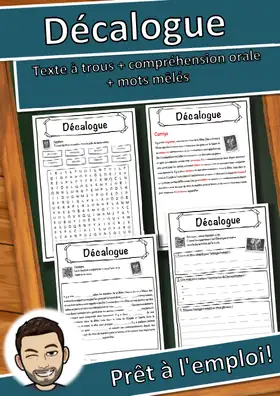
Décalogue – Fiche : texte à trous, compréhension orale et mots mêlés
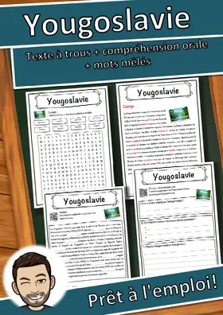
Yougoslavie – Fiche : texte à trous, compréhension orale et mots mêlés

Énergie hydraulique – Fiche : texte à trous, compréhension orale et mots mêlés
Végétarisme – Fiche : texte à trous, compréhension orale et mots mêlés
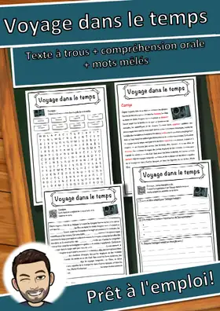
Voyage dans le temps – Fiche : texte à trous, compréhension orale et mots mêlés
Vladivostok – Fiche : texte à trous, compréhension orale et mots mêlés
Virelangue – Fiche : texte à trous, compréhension orale et mots mêlés

Lac des Quatre-Cantons – Fiche : texte à trous, compréhension orale et mots mêlés
Bétail – Fiche : texte à trous, compréhension orale et mots mêlés
Constitution – Fiche : texte à trous, compréhension orale et mots mêlés
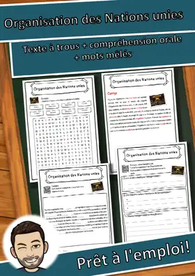
Organisation des Nations unies – Fiche : texte à trous, compréhension orale et mots mêlés
Bataille de Teutobourg – Fiche : texte à trous, compréhension orale et mots mêlés
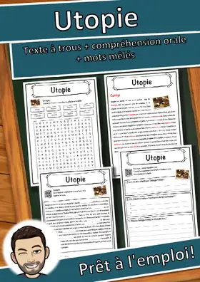
Utopie – Fiche : texte à trous, compréhension orale et mots mêlés
Ouzbékistan – Fiche : texte à trous, compréhension orale et mots mêlés
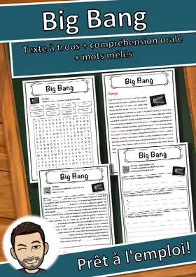
Big Bang – Fiche : texte à trous, compréhension orale et mots mêlés
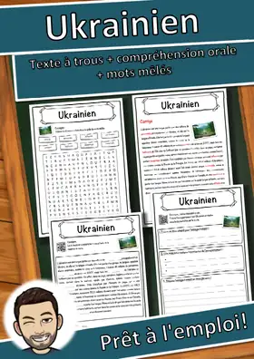
Ukrainien – Fiche : texte à trous, compréhension orale et mots mêlés
Types de dépôts bancaires – Fiche : texte à trous, compréhension orale et mots mêlés
Tungstène – Fiche : texte à trous, compréhension orale et mots mêlés
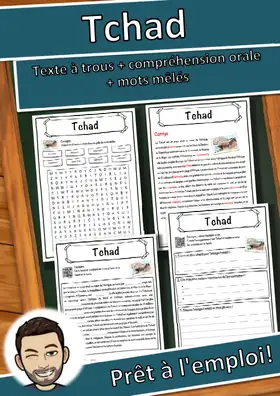
Tchad – Fiche : texte à trous, compréhension orale et mots mêlés
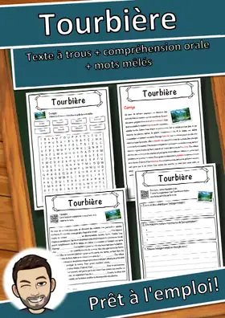
Tourbière – Fiche : texte à trous, compréhension orale et mots mêlés
Tolérance – Fiche : texte à trous, compréhension orale et mots mêlés
Titien – Fiche : texte à trous, compréhension orale et mots mêlés
Érythrée – Fiche : texte à trous, compréhension orale et mots mêlés
Felis silvestris – Fiche : texte à trous, compréhension orale et mots mêlés
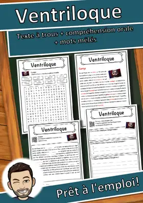
Ventriloque – Fiche : texte à trous, compréhension orale et mots mêlés
Vaccinium myrtillus – Fiche : texte à trous, compréhension orale et mots mêlés
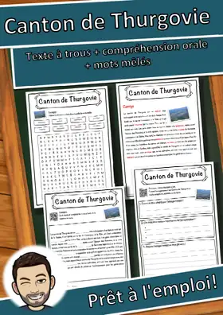
Canton de Thurgovie – Fiche : texte à trous, compréhension orale et mots mêlés
Température – Fiche : texte à trous, compréhension orale et mots mêlés
Sélénium – Fiche : texte à trous, compréhension orale et mots mêlés

Syndrome d'immunodéficience acquise – Fiche : texte à trous, compréhension orale et mots mêlés
Aucune ressource trouvée – essaie un autre mot ou un autre filtre.